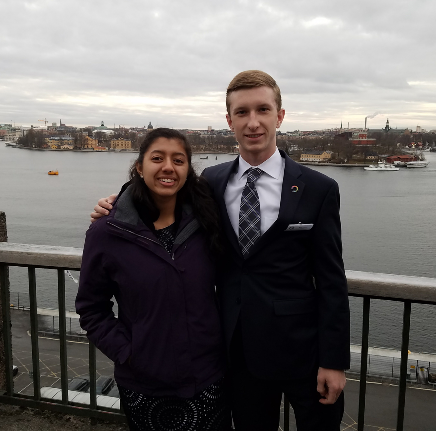

At the closing of each year, Nobel prizes are awarded to Laureates in a grand celebration of discovery, innovation, and excellence. YouResearch advisors Wyatt Pontius and Swetha Revanur, both of whom are freshmen at Stanford University, were invited to attend the festivities in Stockholm.
Of his experiences, Wyatt says “When we landed in Stockholm, it was clear that we weren’t in Stanford anymore. With snow on the ground and temperatures near freezing, it was certainly a departure from the palm-tree packed scenery of school, but it set the perfect backdrop for the incredible week of ends to come.”
Between curling lessons, a tour of Stockholm, and a visit Astra-Zeneca – one of Sweden’s largest companies – both Wyatt and Swetha were culturally immersed. The main attraction of the visit, however, was the science. After a set of brief presentations to industry leaders about their research projects, the Nobel events were finally underway.
From chatting casually with the laureates at the American Embassy, to hearing their Nobel lectures, to partying with them at the Nobel after-party, these YouResearch advisors had the full range of experiences. The highlight of these events, apart from interaction with the laureates, of course, was the opportunity to attend the prize ceremony and the banquet, both of which were grand events and once-of-a-lifetime experiences.
Against this backdrop of fun and celebration, Wyatt and Swetha had the opportunity to present their work to thousands of high-school aged Swedish students in the very same forum where the laureates had delivered their lectures just days before.
Wyatt has described his experiences fondly, stating that “this quickly became the greatest trip I had ever experienced and also a great reminder of the rewards that can come to those who work hard and pursue extensive research projects.”
To current YouResearch Scholars and other students who are interested in pursuing research in the future, he says that “if you need any extra incentive to pursue scientific research, let this be it: your work could be your ticket to the world’s greatest party, an opportunity to meet and bond with some of the brightest young scientists from around the world, and maybe even a chance to dance with a Nobel Laureate.”